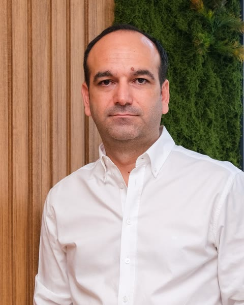

Sadece 7 Deneme
999 TL832,50 TL + KDV
7 deneme + konu görevleri
✓ Kalırsan sonraki dönemin Son 20 Gün paketi ücretsiz, geçene kadar
7 Deneme'yi alSMMM Staja Giriş · 21 Kasım 2026Sınavı değiştir
Denemelerimizde barajı geç, gerçek sınavda kalırsan üyeliğin geçene kadar ücretsiz.
Şimdi başla, sorular hazır1 Kasım'a kadar 600 TL indirim · Şartlar ve koşullar

Son 20 Gün · Deneme karnesi1 Kasım'da açılıyor
Örnek gösterimdir.
Şart: 7 deneme · en az 5'inde 60 · görevler tamam
999 TL832,50 TL + KDV
7 deneme + konu görevleri
✓ Kalırsan sonraki dönemin Son 20 Gün paketi ücretsiz, geçene kadar
7 Deneme'yi al2.388 TL2.988 TL yerine1.990 TL + KDV
7 deneme + görevler + sitedeki bütün SGS soruları
✓ Kalırsan bütün üyeliğin geçene kadar ücretsiz
★ Bizimle geçersen bitirme (Yeterlilik) paketinde %50 indirim
Tam Paketi alŞart: 7 deneme · en az 5'inde 60 · görevler tamam · 21 Kasım'dan önce
Fiyatlar KDV dahil · Kampanya koşulları
SMMM Staja Giriş · 21 Kasım 2026Sınavı değiştir
Cevabını verdiğin anda konunun özeti, yanlışının nedeni ve dayandığı madde açılır. Çıkmış sınavlarda en sık sorulan konulardan.
Ücretsiz, üye olmadan · Her cevaptan sonra doğrusunu ve dayandığı maddeyi görürsün.
Telefonda da çalış: Android uygulamasını Google Play'den indir →
Sınavını seç
Paketler
Bütün paketler ve ayrıntılar →SMMM Staja Giriş
—
1 Kasım'a kadar 600 TL indirimle 2.388 TL
SMMM Yeterlilik
—
SMMM Yeterlilik
—
Ne arıyorsun?
NöbetçiTetikte'nin soru yardımcısı
Her gün çıkmış sınavlarda sık sorulan konulardan bir soru. Nöbetçi en sık yapılan yanlışı, tuzağını, doğrusunu ve dayandığı maddeyi adım adım anlatır.
Konuyu bilmiyorsan da başla. Soruyu cevaplayınca o konunun özeti açılır, Nöbetçi adım adım anlatır.
Nöbetçi, Tetikte'nin soru yardımcısı. Her yanlışını tuzağı, kuralı ve dayandığı maddeyle anlatır.
Son 10 yılın çıkmış sorularını tek tek okuduk; her dersin en çok sorulan konularından ders ders sorular. Bitince hangi konuda eksiğin olduğunu konu konu görürsün.
Yalnız doğru cevabı söylemez: yanlış şıkkın seni neden çektiğini, hesabı adım adım, yevmiye kaydını ve dayandığı maddeyi anlatır.
Günün sorusunda izle →Takıldığın soruda kendi sorunu yaz, Nöbetçi o soru üzerinden cevaplasın. Yapay zekâ olduğunu açıkça söyler; yetmezse ekibimize sorarsın.
Her soruda, pakette →Yanlış yaptığın soru kendiliğinden yanlış kutuna düşer; 2 gün sonra yeniden karşına çıkar, bilirsen 7 gün sonra son tur.
Yanlışlarım →Soru bankası son 10 yılın çıkmış sınavlarındaki konu sıklığına göre kurulur: sınavda sık sorulan konuda daha çok soru çözersin.
Dersleri gör →130 soru, 165 dakika, resmî ders dağılımı. Çözerken cevap görünmez; bitince ders ders karne.
Denemeleri gör →Ücretsiz, üye olmadan. Her cevabından hemen sonra doğrusu, yanlışının nedeni ve dayandığı madde açılır. 🔊 5 sorunun her birinde Nöbetçi kalemle çizip sesli anlatarak çözer.

Araştırmalar uzun süredir aynı şeyi gösteriyor: bir konuyu tekrar tekrar okumak yerine kendini sınayarak hatırlamaya çalışan, öğrendiğini daha kalıcı tutuyor. Bilimde adı test etkisi (Roediger ve Karpicke, 2006; Dunlosky ve ark., 2013).
Tetikte bu yöntemi senin sınavına getiriyor. Sayfalarca okuyup sonra soruya geçmiyorsun: soruyla başlıyorsun, cevabını verdiğin anda o konunun özeti açılıyor. Konunun haritasını, temel terimlerini ve sınavın onu nasıl sorduğunu orada görürsün; istersen Nöbetçi konuyu adım adım anlatır. Yanlış yaptıysan hangi tuzağa düştüğünü ve sorunun dayandığı maddeyi de gösterir. Konuyu bilmeden başlayan da bu düzende ilerler. Binlerce soruyu bu düzende yazdık; her biri yayına çıkmadan önce birden fazla denetimden geçiyor.
Önce seviyeni ölçüyoruz. Bir derste zayıfsan o derste kolay sorulardan başlıyorsun, adım adım zor ve çok zor sorulara çıkıyorsun. Güçlüysen doğrudan zor sorulardan başlıyoruz.
Tetikte'yi İzmir'de kurulu Dizdar Denetim Danışmanlık ve Yazılım A.Ş. ekibi hazırlıyor. Kurucumuz Cem Dizdar sınavlarına hep böyle hazırlandı: konuyu sorunun içinden öğrenerek. Tetikte'yi bu yüzden kurdu. Hakkımızda ve tam künye →
Sınava tetikte gir.